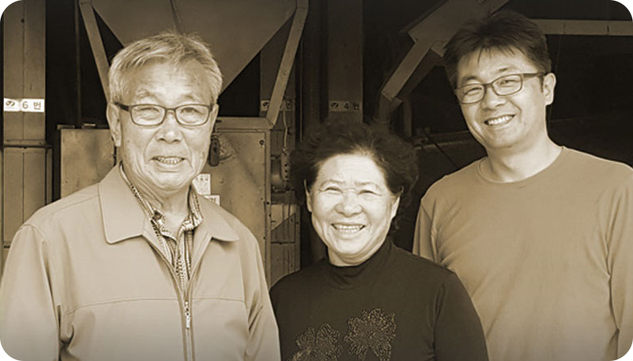
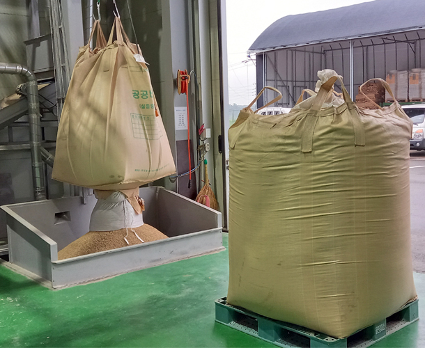
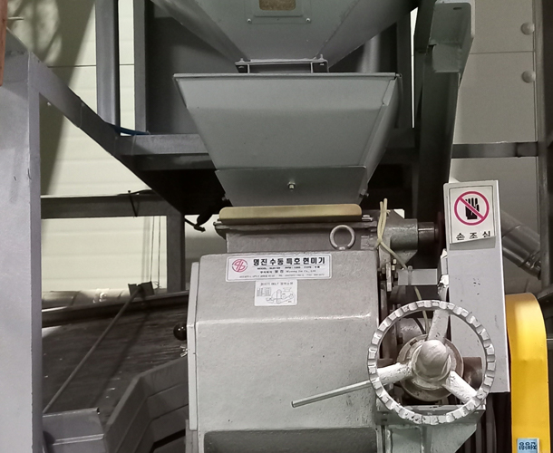
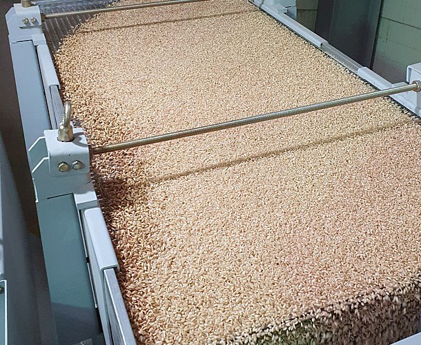
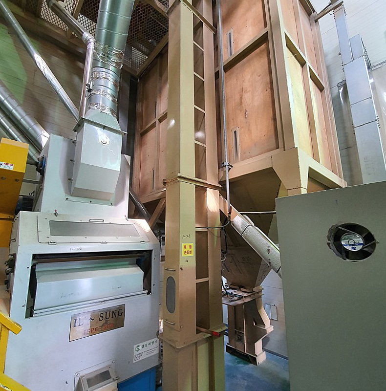
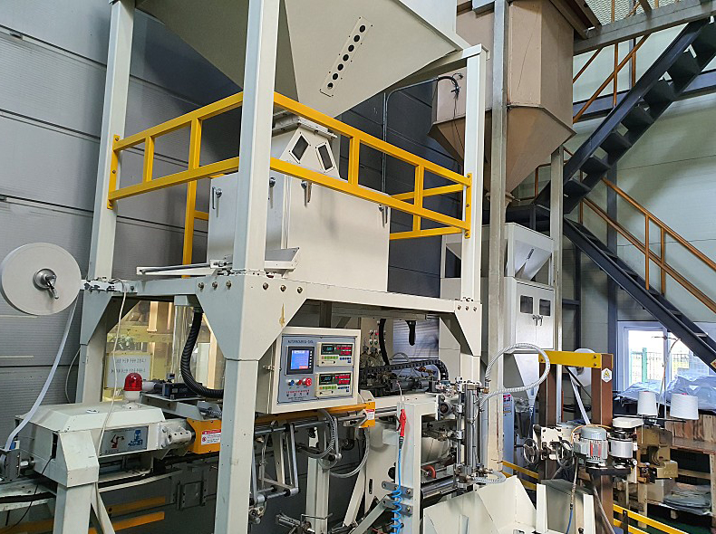

안녕하세요.
미소정미소 입니다.
1964년부터 지금까지 50년 이상 같은 자리에서 대를 이어 정미소를
해 오고 있습니다. 50년 이상 할 수 있었던 것은 분명한 이유가 있습니다.
1964년에 시작하여 50여 년의 전통을 이어왔고 정직하지 않다면,
품질이 탁월하지 않다면, 지켜낼 수 없는 긴 시간 입니다.
아버지와 그 아들이 벼의 수확, 건조, 저장, 가공 전 과정을 고집스레 철저히
관리하여 맛있고 건강한 쌀을 생산하고 있습니다. 미소정미소의 50년의
열정과 노하우를 지금 만나 보십시오.
SINCE
1964~

추억이 된 옛날 미소정미소
현대식 최신 자동화 설비기계를 갖추고
있으며, 원료곡 선별과 석발, 분쇄 과정을
거쳐 혼합기를 이용하여 위생적이며
청결하게 제품을 만들고 있습니다.

도정을 위한 원료곡을 투입하여 현미를 가공하여 분리 시킵니다.



원료곡 선별과 석발, 분쇄 과정을 거쳐
이물질을 제거하고 혼합기를 이용하여
위생적이며 청결하게 제품을 만들고 있습니다.
믿고 드셔도 좋습니다.
쌀이 되기까지 공정을 모두 관리하기 때문에
믿을 수 있고 최고의 맛과 신선함을 만들기 위해
50년의 노하우로 도정하여 감사의 마음까지
담아 보내도록 하겠습니다.
가공된 현미를 다시 한번 분쇄 석발한후 포장합니다.

